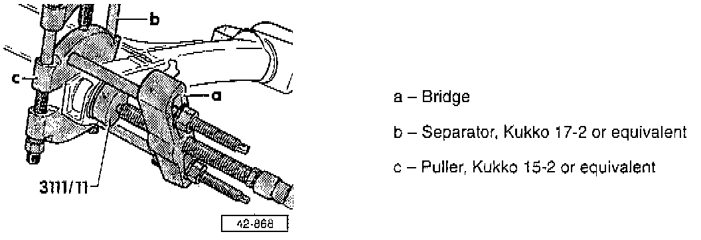
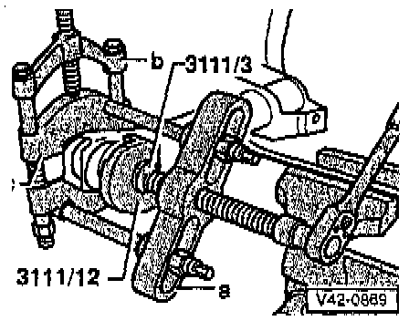
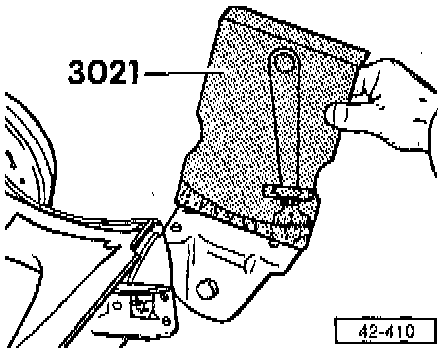

Rear
NOTE:- Axle beam with drum brakes shown, models wit disc brakes similar.
- Directly below the component legend are the Fig. numbers. Please refer to these for information regarding removal and installation instructions.
CAUTION: DO NOT attempt to straighten or weld rear axle beam or stub axles.

1 Lug Bolt
- Tighten to: 110 Nm (81 ft. lbs.)
2 Nut
- Tighten to: 70 Nm (52 ft. lbs.)
- Axle beam must be in horizontal position (vehicle not loaded) when tightening nut
3 Nut
- Tighten to: 25 Nm (18 ft. lbs.)
4 Dished Washer
5 Nut
- Tighten to: 15 Nm (11 ft. lbs.)
6 Cover (large)
7 Upper mounting ring (rubber)
8 Cover (small)
9 Suspension Strut
- Removing/installing, refer to Fig. 1
- Disassembling/assembling. Service and Repair
10 Wheel Bearings
- Servicing, refer to Transmission and Drivetrain.
11 Nut
- Tighten to: 80 Nm (59 ft. lbs.)
- Use only self-locking nut with captive washer
- Axle beam must be in horizontal position (vehicle unloaded) when tightening nut
12 Bolt
- Install from center of vehicle
13 Bolt
- Tighten to: 70 Nm (52 ft. lbs.)
- If threads in cap nut are damaged, drill out and re-tap
14 Axle Beam Bushing
- Pressing out, refer to Fig. 2
- Pressing in, refer to Fig. 3
15 Bracket
- For parking brake cable
16 Axle Beam
- Keep contact surface and threaded holes for stub axles free of paint and dirt
- Preload axle beam bushings when installing, refer to Fig. 5
- For running production changes, Application and ID
17 Stabilizer Bar
18 Mounting Bracket
- Positioning on axle beam, refer to Fig. 4
- With bracket for mounting brake pressure regulator
- Do not loosen when removing rear axle beam
NOTE: For these procedures, use the tools shown in the following illustrations or their equivalents.

Fig. 1 - Suspension Strut, Removing/Installing

Fig. 2 - Axle Beam Bushing, Pressing Out
- Remove any corrosion in area of bushing before pressing out.

Fig. 3 - Axle Beam Bushing, Pressing In
- Cylindrical part of bushing must protrude from axle by 8.0 mm ± 1.0 mm (0.32 ± 0.04 inch).
a Bridge
b Separator, Kukko tool No. 17-2, or equivalent
c Puller, Kukko Tool No. 15-2, or equivalent
- thrust piece, tool No. VAG 3111/3, or equivalent
- Plate, tool No. VAG 3111/12, or equivalent

Fig. 4 - Mounting Bracket, Positioning On Axle Beam
- Angle of inclination to axle beam = 12° ± 2°

Fig. 5 - Rear Axle Beam, Installing
CAUTION: The rear axle mountings must be under tension when installed.
- Install all mounting bolts but do not tighten.
- Align right hand mounting bracket so bolts are in center of elongated holes.
- On left hand side press mounting bracket against axle beam bushing with a lever until gap on inside -arrow- is minimal.
- Tighten all bolts to specified torque.